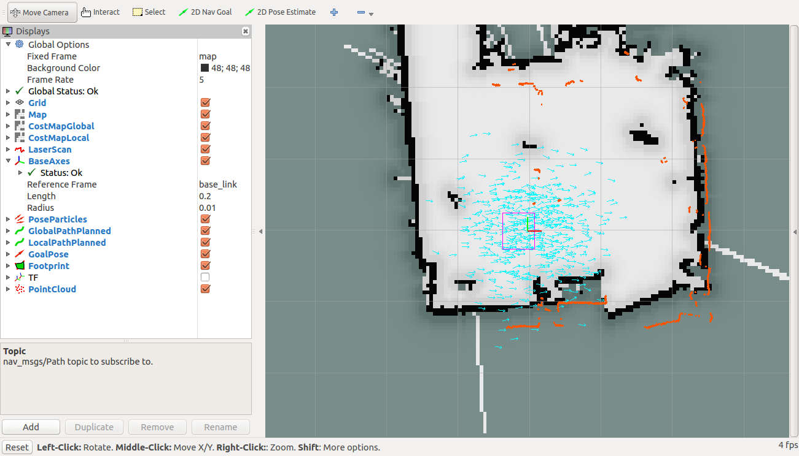
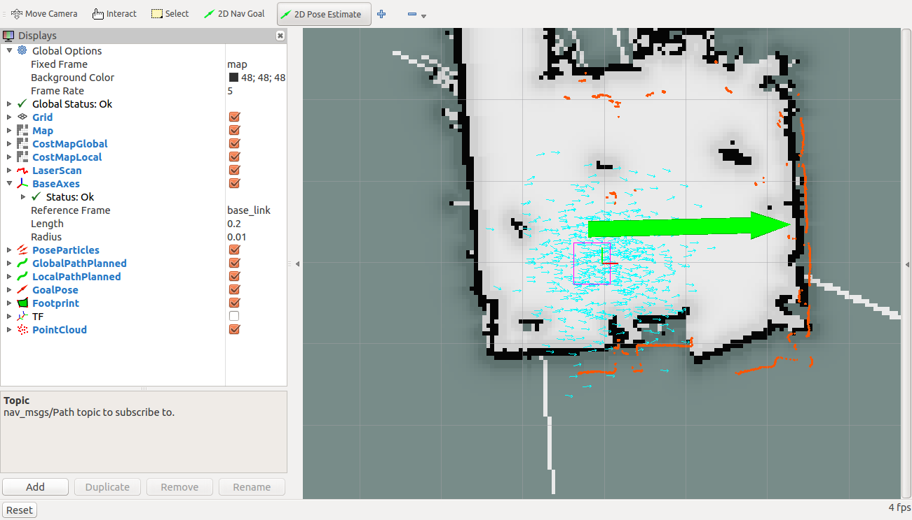
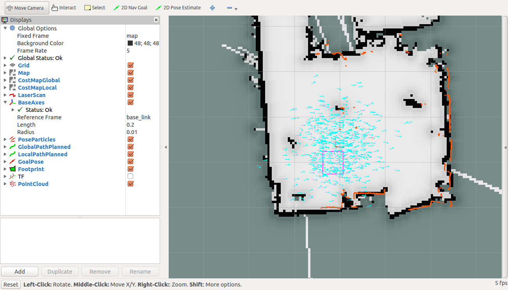
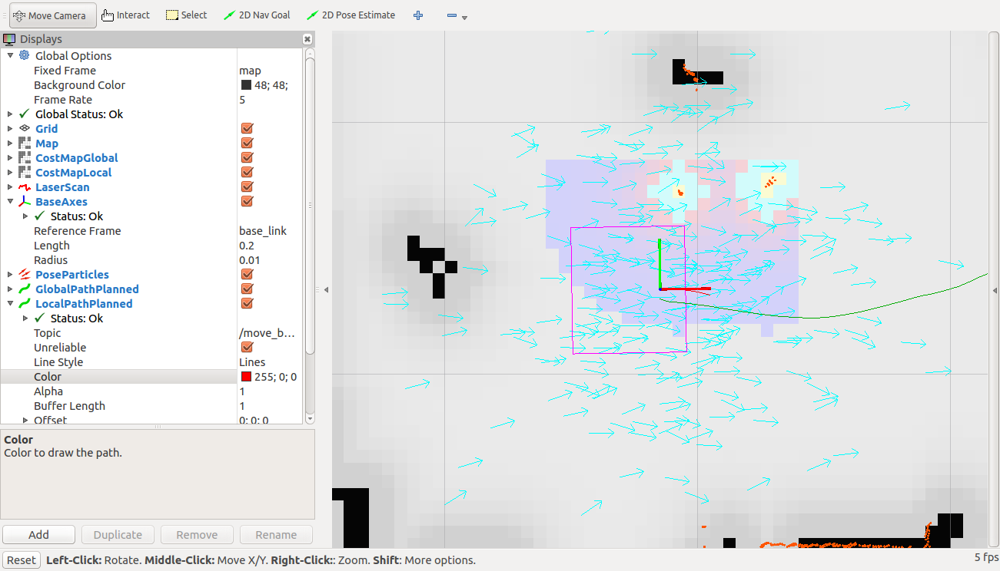
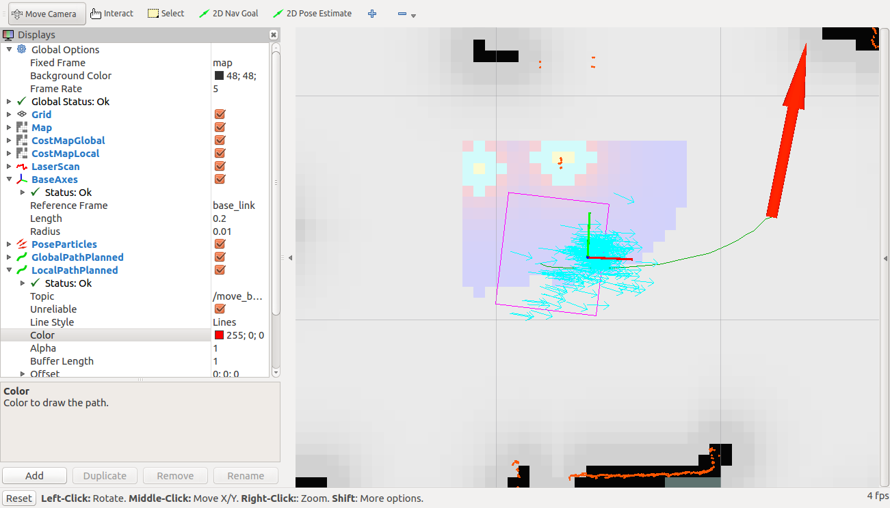
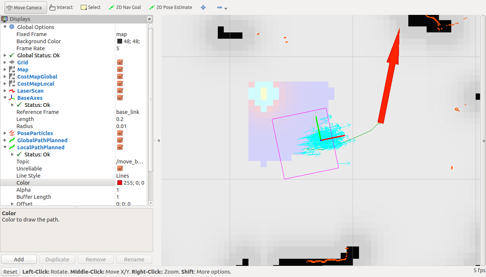
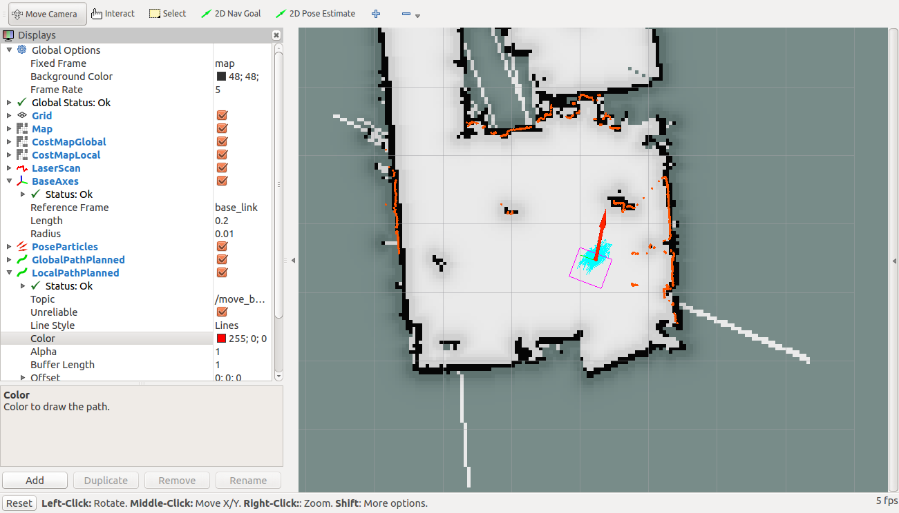
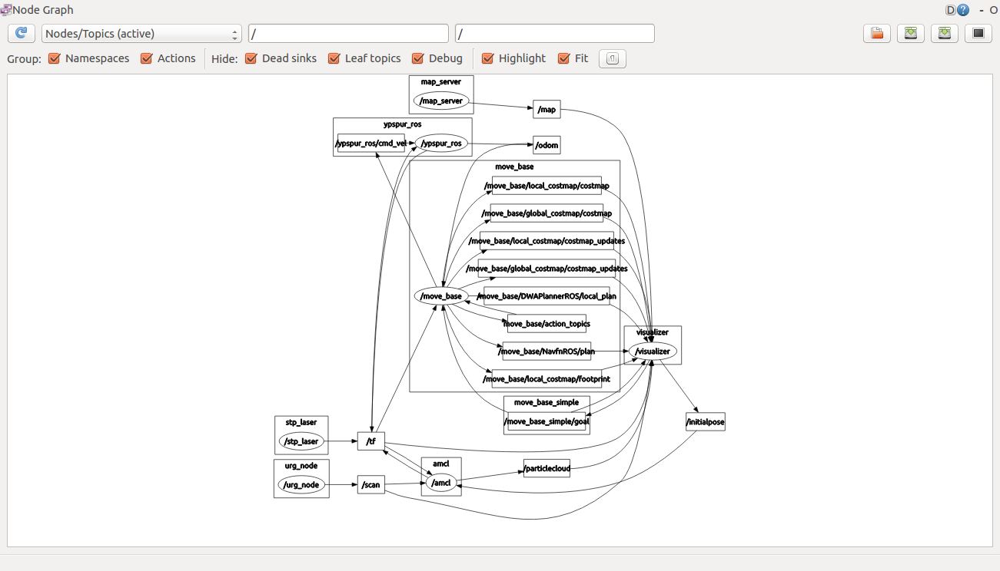

先ほど作成した地図を用いて、自律ナビゲーションを試してみましょう。PCにロボットとURGのUSBケーブルを接続し、地図を作成した際の初期位置・姿勢と同じようにロボットを置いて、下記のコマンドを実行します。
$ roslaunch rsj_seminar_navigation navigation.launch robot_param:=/home/ubuntu/params/rsj-seminar20??.param該当するものに置き換えること
rvizが起動し、下記のように先ほど作成した地図が表示されます。この例では、地図と、オレンジ色でプロットされているURGの現在のデータがずれており、自己位置がずれていることがわかります。また、水色のたくさんの矢印は、推定している自己位置の候補を表しています。

rvizのウインドウ上中央にある、「2D Pose Estimate」ボタンを押し、ロボットの本来の位置から、ロボットの向いている方向に向かってドラッグすると、緑色の矢印が現れ、自己位置推定ノードに位置姿勢の修正を指示することができます。

地図と、URGのデータが概ね一致しました。

次に、ウインドウ上中央の、「2D Nav Goal」ボタンで、ナビゲーションのゴールを指定します。同様に、与えたいゴールの位置から、目標姿勢の方向に向かってドラッグすると、緑色の矢印が現れ、ナビゲーションのノードに目標位置姿勢の指示を与えることができます。

すると、緑色の線でグローバルプランナーが生成したパス、赤色の線でローカルプランナーが生成したパスが表示され、ロボットが走行を開始します。

走行していくと、水色の矢印で表された、自己位置の候補の分布が小さくなり、自己位置推定の確度が高くなったことが確認できます。


ゴールに到着し、姿勢を目標の方向に向けると、動作が終了します。

この状態で、どのようなノードが立ち上がっているのか、確認してみましょう。新しい端末を開き、rqt_graphを実行します。
左上の、「Nodes only」の部分で、「Nodes/Topics (active)」を選択します。

丸枠で書かれた名前は、ノードを表しており、下記の仕事をしています。
- ypspur_ros
- ロボットの制御
- urg_node
- URGデータの取り込み
- map_server
- 地図ファイルの読み取り
- amcl
- 自己位置推定(モンテカルロローカライゼーション、いわゆる、パーティクルフィルター)
- move_base
- ナビゲーション(プラグインで、ダイクストラ法のグローバルプランナーと、ダイナミックウインドウアプローチのローカルプランナー、2Dコストマップの処理を実行)
- visualizer
- データの可視化(rviz)
- stp_laser
- ロボットの座標原点とURGの座標原点の座標変換の定義
四角枠で書かれた名前は、トピックを表しています。